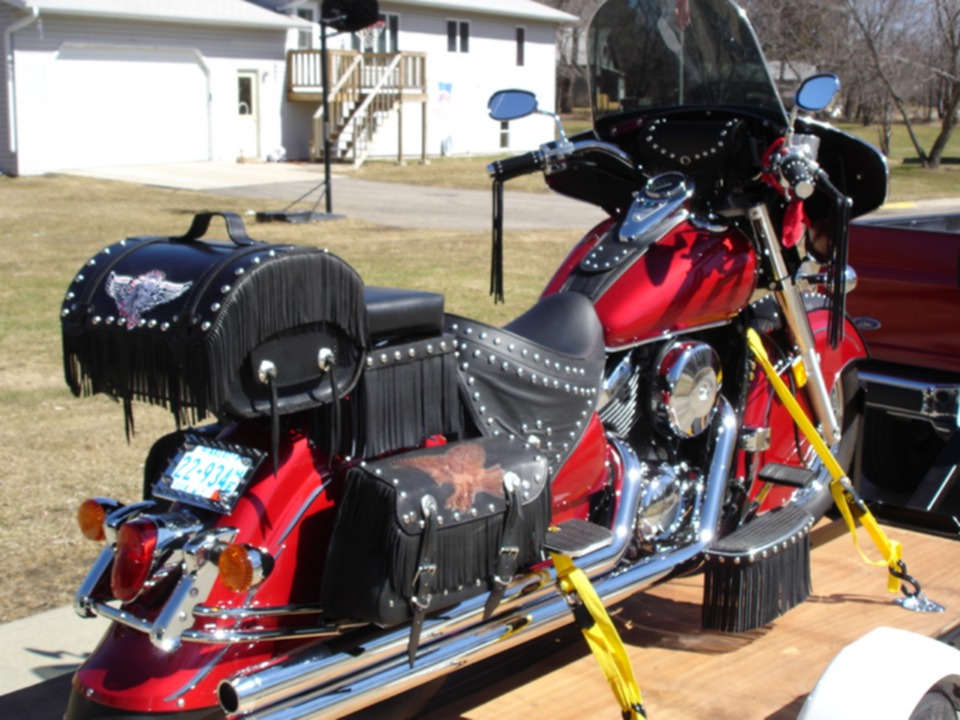
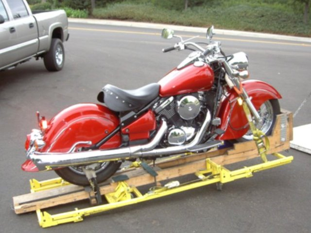

I bought this 2003 Kawasaki 800 Drifter from California, It was new in a crate stored in a warehouse, when the roof collapsed. The insured company paid off, and when I bought it.... there was absolutely no damage. (Pictured on the right).
Here I have it loaded up to get inspected, after adding many accessories... many of which I made myself.